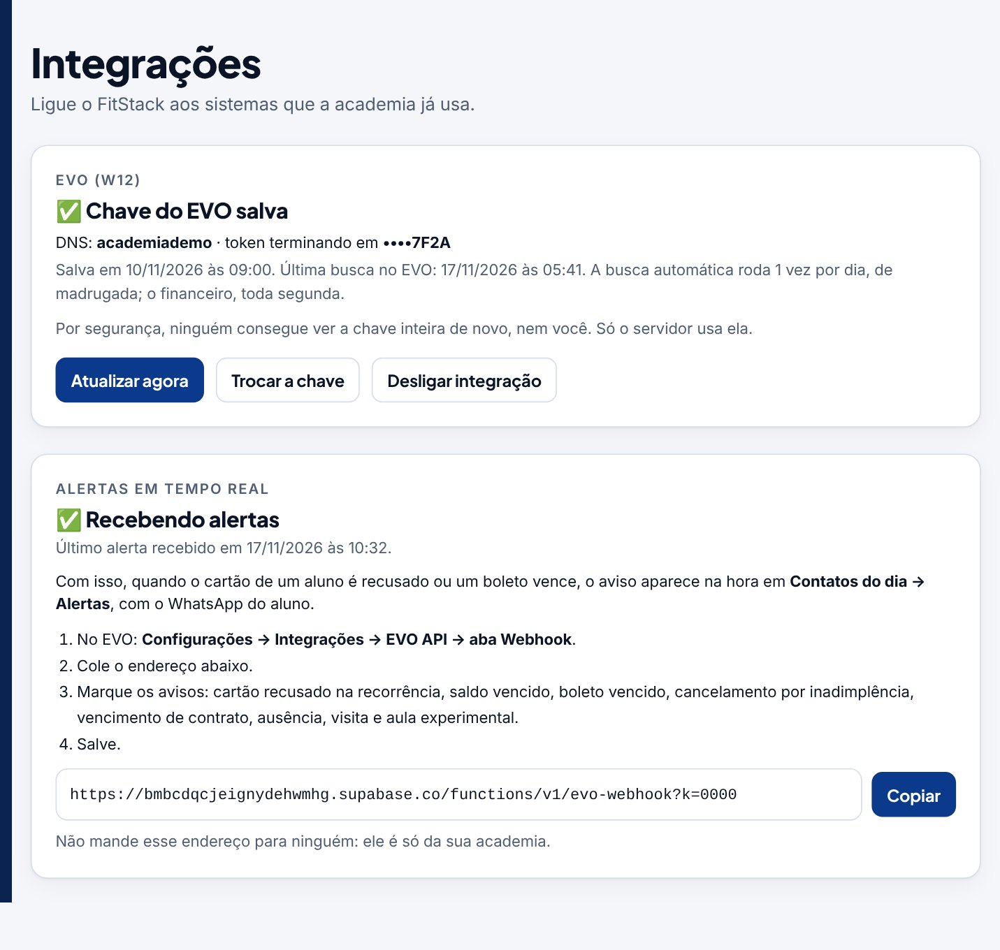
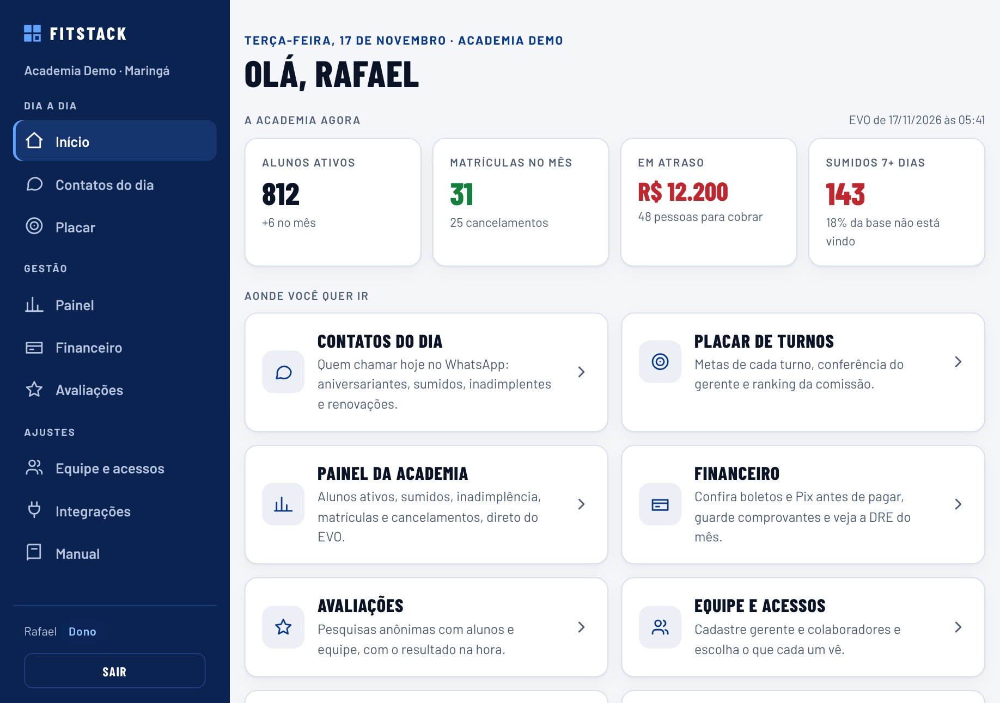
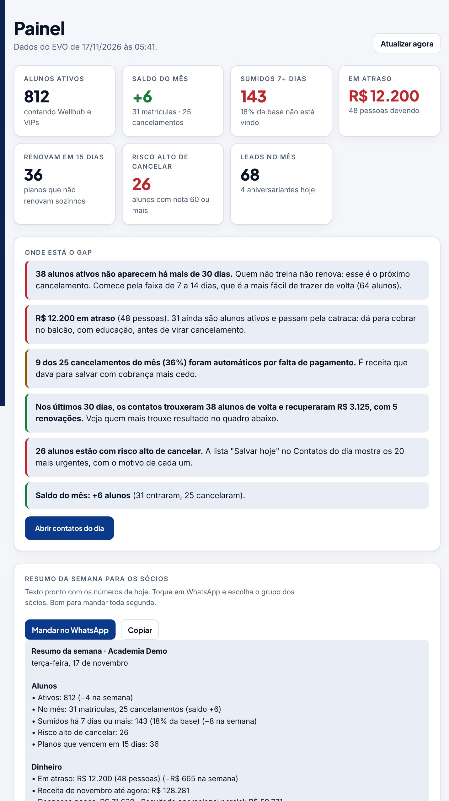
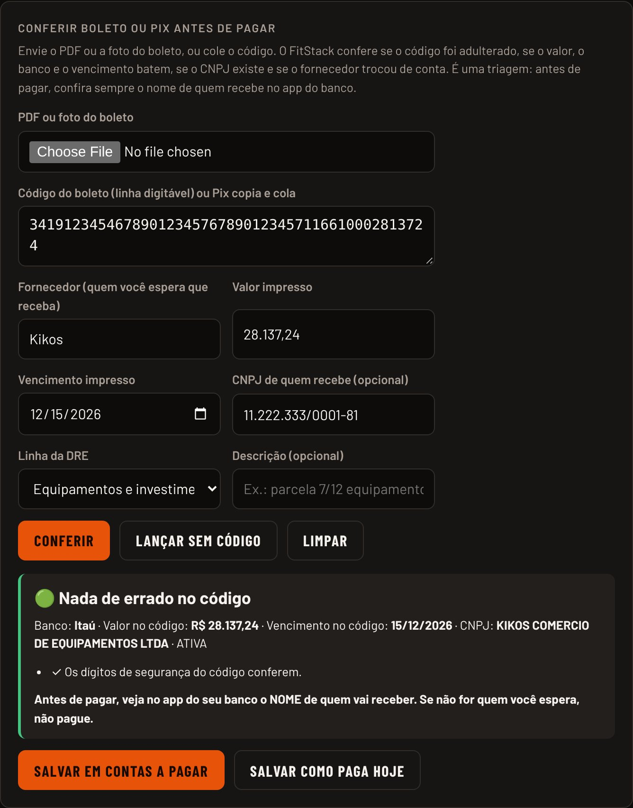
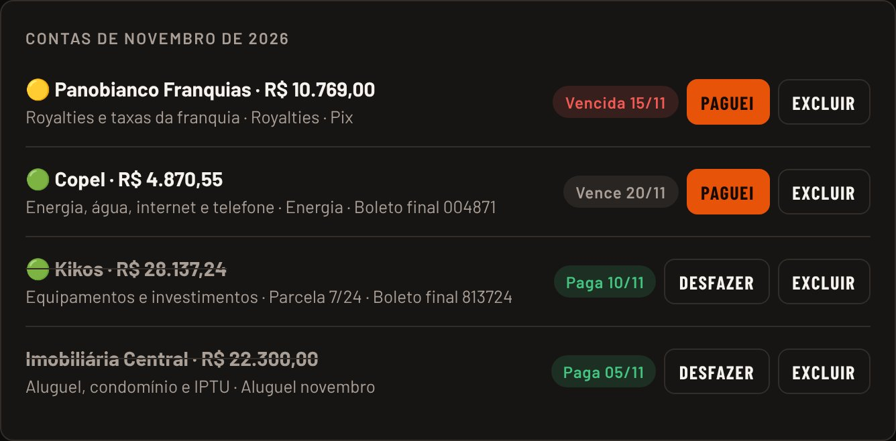
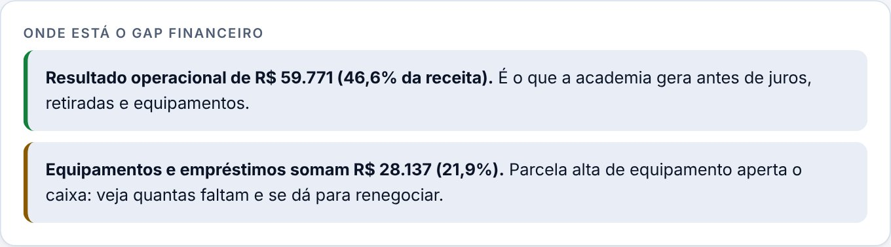
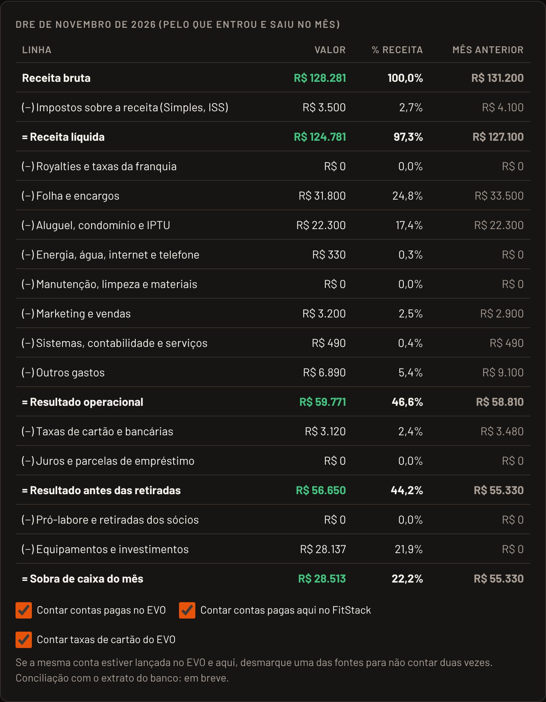
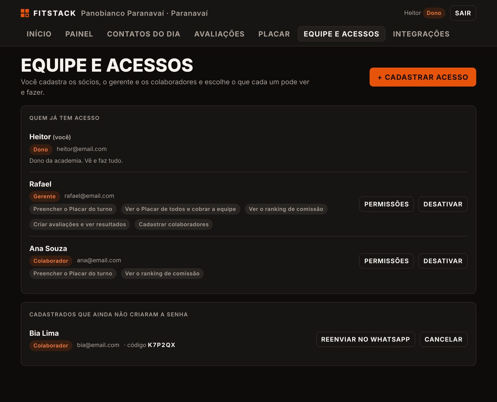
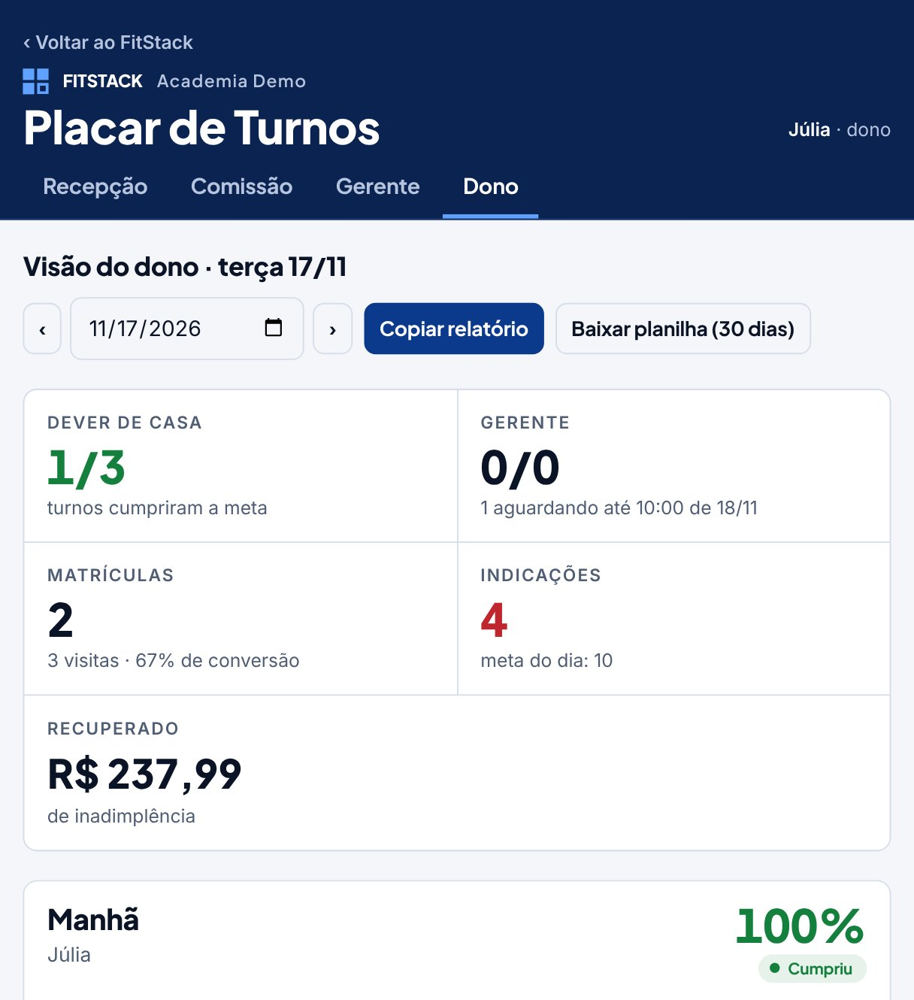
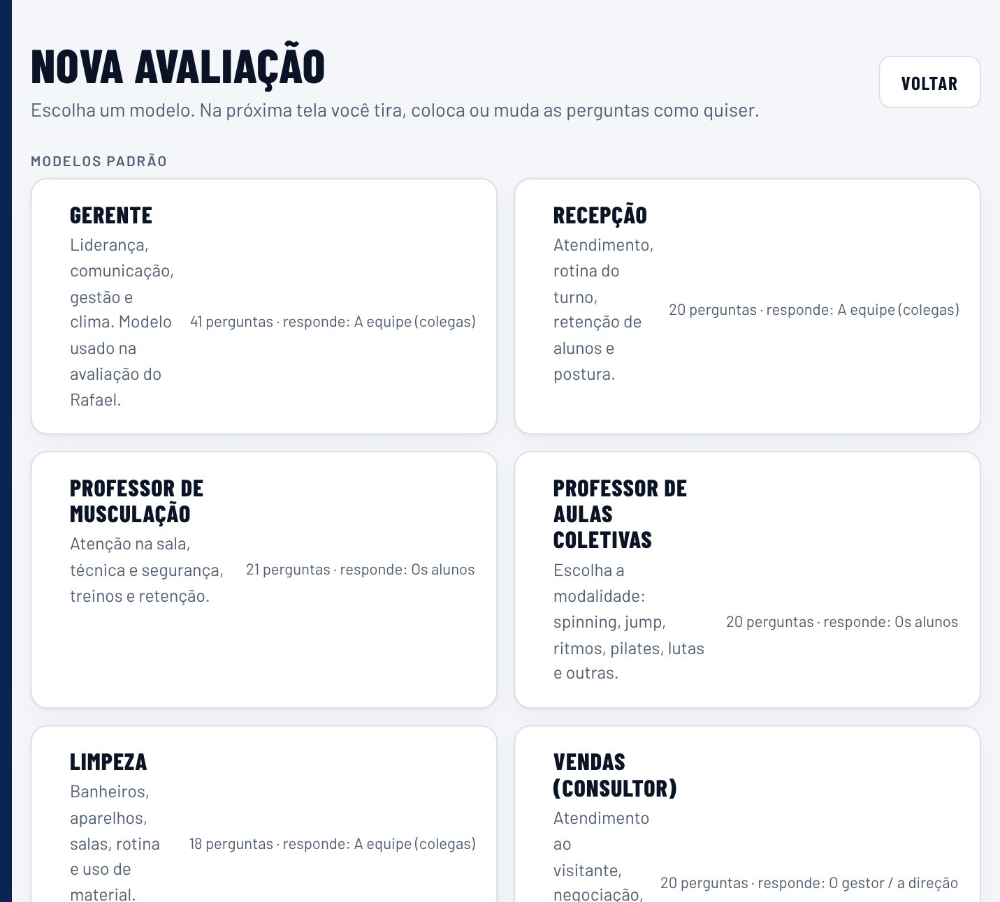

Manual do Dono e dos Sócios
Do primeiro acesso ao dia a dia: ligar o EVO, cadastrar a equipe e as unidades, ler o Painel, o Financeiro (contas e DRE), comissão, histórico e avaliações.
- Comece por aqui
- Primeiro acesso
- Ligar o EVO (passo a passo)
- Várias unidades num login só
- Dono e sócio: o que cada um pode
- Segurança (leia primeiro)
- Rotina dos sócios
- Início: números do dia, metas e unidades
- Painel da academia (EVO)
- Funil de vendas (no Painel)
- Financeiro: contas a pagar e DRE
- Equipe e acessos
- Placar: a área do dono
- Avaliações anônimas
- Se der problema
1.Comece por aqui
Você recebeu da FitStack um e-mail cadastrado e um código. Siga esta ordem no primeiro dia. Leva uns 30 minutos.
- 1 Fazer o primeiro acesso e criar sua senha (capítulo 2).
- 2 Ligar o EVO (capítulo 3). Sem isso, o Painel e os Contatos do dia ficam vazios.
- 3 Cadastrar o gerente e a recepção em Equipe e acessos (capítulo 9).
- 4 Conferir as metas do Placar de cada turno (capítulo 10).
- 5 Mandar os manuais para a equipe: Manual no menu → botão WhatsApp em cada manual.
- 6 Tem outra unidade? Cadastrar outra unidade (capítulo 4).
2.Primeiro acesso
- Abra app.fitstack.com.br no computador ou no celular.A tela do FitStack com Entrar e Primeiro acesso.
- Toque em Primeiro acesso.Um formulário com 4 campos.
- Escreva seu nome.
- Escreva o e-mail igualzinho ao da mensagem da FitStack.
- Escreva o código de acesso (6 letras e números).
- Crie uma senha com pelo menos 6 caracteres e anote num lugar seguro.
- Toque em Criar acesso.Você entra como Dono da sua academia.

Nos outros dias
Abra o site, toque em Entrar e use e-mail e senha. Esqueceu? Toque em Esqueci minha senha: chega um e-mail para criar a senha nova.
3.Ligar o EVO (passo a passo)
Com o EVO ligado, o FitStack monta sozinho o Painel e as listas de Contatos do dia (aniversariantes, sumidos, inadimplentes, renovações). Ele só lê o EVO: nunca altera nada lá.
Parte 1: criar a chave no EVO
- Entre no EVO com o seu usuário de dono e escolha a unidade certa.A tela inicial do EVO.
- No menu da esquerda, toque em Configurações.Abre a lista de configurações.
- Toque em Integrações.Uma tela com vários cartões de integração.
- No campo Pesquisar integração, escreva API e toque no cartão EVO ("Utilize a API para acessar e manipular dados do EVO").A tela EVO API, com as abas Consumo, Tokens e Webhook.
- Toque na aba Tokens.O EVO pode pedir para confirmar seu login e senha. Confirme.
- Toque em Novo token.Um formulário com o nome e as permissões.
- No nome, escreva FitStack.Assim você sabe para que serve esse token.
- Nas permissões, marque só o que for consultar, listar ou ver. Deixe desmarcado tudo que for incluir, alterar, editar, cancelar ou excluir.Se o EVO não separar, pode marcar tudo: o FitStack só lê.
- Salve.O token aparece na lista.
- Copie o token (o código grande) e anote o DNS.O DNS é o nome da sua conta no EVO. Ele aparece na tela da EVO API e também no endereço do EVO, logo depois de /app/. Exemplo: em evo5.w12app.com.br/#/app/MINHAACADEMIA/…, o DNS é MINHAACADEMIA.
Parte 2: colar a chave no FitStack
- Abra app.fitstack.com.br e entre como dono.
- No menu, toque em Integrações.O cartão "Conectar ao EVO".
- No campo DNS, cole o DNS.
- No campo Token, cole o token.Ele aparece como bolinhas.
- Toque em Salvar chave."✅ Chave do EVO salva", com o final do token.
- Toque em Atualizar agora.Em uns 30 segundos aparece "Dados do EVO atualizados". Abra o Painel e confira os números.

| Como funciona depois | |
|---|---|
| Quando busca | Sozinho, todo dia às 5h40. E quando você toca em Atualizar agora (no máximo a cada 10 minutos). |
| O que busca | Alunos ativos (aniversário, último treino, celular, contrato), mensalidades vencidas, cancelamentos com motivo, matrículas e leads do mês. |
| Quanto gasta da API | Cerca de 30 consultas por busca, uns 900 por mês. Confira no EVO na aba Consumo da EVO API. |
| Segurança | A chave fica guardada só no servidor. Ninguém da equipe vê, nem você: na tela aparecem só os 4 últimos caracteres. |
| Várias unidades | Cada unidade do EVO tem o próprio token. Troque de unidade no FitStack e repita os passos. |
| Trocar ou desligar | Em Integrações: Trocar a chave ou Desligar integração (toque duas vezes). |
Parte 3: alertas em tempo real (opcional, recomendado)
Com isso, cartão recusado, boleto vencido e aluno que faltou aparecem na hora na lista Alertas da recepção. Precisa do plano da EVO API que tem webhook (o EVO chama de API Pro).
- No FitStack, em Integrações, role até Alertas em tempo real e toque em Copiar.O endereço dos alertas fica copiado. Ele é só da sua academia: não mande para ninguém.
- No EVO: Configurações → Integrações → EVO API, aba Webhook.
- Cole o endereço e marque os avisos: cartão recusado na recorrência, saldo vencido, boleto vencido, cancelamento por inadimplência, vencimento de contrato, ausência, visita e aula experimental.
- Salve.Quando chegar o primeiro aviso, Integrações mostra "✅ Recebendo alertas".
4.Várias unidades num login só
- Em Início, role até Minhas unidades.
- Toque em + Cadastrar outra unidade.Campos de nome e cidade.
- Escreva o nome da unidade e a cidade e toque em Criar unidade.Você já entra na unidade nova, como dono.
- Para trocar de unidade, use o seletor com o nome da unidade, perto de FITSTACK, ou toque na unidade em Início.A tela recarrega com os dados da unidade escolhida.
5.Dono e sócio: o que cada um pode
| Dono | Sócio | |
|---|---|---|
| Ver e fazer tudo no sistema | ✓ | ✓ |
| Painel do EVO, comissão, histórico, medidas do gerente | ✓ | ✓ |
| Avaliações de gerente, coordenador e clima | ✓ | ✓ |
| Cadastrar e remover sócio | ✓ | — |
| Ser alterado ou removido por outra pessoa | Nunca | Só pelo dono |
Este manual mostra as telas que só vocês veem. Para conferir turnos e mudar metas no dia a dia, veja também o Manual do Gerente.
6.Segurança (leia primeiro)
- Ative a verificação em duas etapas (2FA) no seu Gmail. Quem tem seu e-mail consegue trocar sua senha.
- Cada pessoa tem o próprio login. Nunca crie uma conta "Recepção" compartilhada.
- Ninguém usa a senha do gerente. Se alguém conferir o próprio turno, a conta usada aparece para você.
- Funcionário saiu? Desative no mesmo dia em Equipe e acessos.
- A chave do EVO fica só no servidor. Ninguém da equipe vê. Nunca cole a chave em conversa, e-mail ou WhatsApp.
- Computador da recepção: peça para todos tocarem em Sair ao terminar.
7.Rotina dos sócios
| Quando | O que olhar | Onde |
|---|---|---|
| Todo dia (2 minutos) | Sumidos, inadimplência e contatos feitos hoje | Painel |
| Toda segunda | Quadro "Onde está o gap" e a evolução da semana. Decidir 1 ação para a semana. | Painel |
| Toda semana | Conferências do gerente: no prazo, atrasadas, aprovou abaixo da meta | Placar → Dono |
| Todo mês | Ranking e pote da comissão; matrículas x cancelamentos; motivos de cancelamento | Placar → Comissão e Painel |
| A cada 3 meses | Avaliação anônima do gerente e de clima | Avaliações |
8.Início: números do dia, metas e unidades
A tela Início é o seu resumo. Em um olhar você vê como a academia está e o que pede atenção.
| Parte da tela | Para que serve |
|---|---|
| A academia agora | Alunos ativos, matrículas do mês, valor em atraso e sumidos. Toque em um número para abrir a tela dele. |
| Aviso de contas | Aparece quando tem conta para pagar nos próximos 7 dias ou já vencida. Toque em Abrir contas a pagar. |
| Meta do mês | Mostra quanto já foi feito e, no ritmo de hoje, em quanto o mês fecha. Verde = chega na meta; vermelho = não chega. |
| Unidades lado a lado | Só para quem é dono ou sócio de mais de uma unidade: compara as unidades na mesma tabela. |
- Em Meta do mês, toque em Definir metas.Dois campos: matrículas no mês e receita do mês.
- Preencha um ou os dois e toque em Salvar metas.A barra aparece na hora. A meta vale para todos os meses, até você mudar.

9.Painel da academia (EVO)
O Painel mostra os números da academia direto do EVO. Ele atualiza sozinho todo dia às 5h40.
- No menu, toque em Painel.Em cima: "Dados do EVO de (data e hora)". Embaixo, os quadros com os números.
- Leia os 6 números de cima (tabela abaixo).
- Leia o quadro Onde está o gap.Frases prontas dizendo onde a academia está perdendo dinheiro e alunos.
- Role a tela para ver os gráficos e a evolução dia a dia.
- Precisa do número de agora? Toque em Atualizar agora.Leva uns 30 segundos. Só pode atualizar de novo depois de 10 minutos.

| Número | O que é | Para que serve |
|---|---|---|
| Alunos ativos | Todos os alunos com plano ativo no EVO, contando Wellhub e VIPs. | O tamanho da base. |
| Saldo do mês | Matrículas menos cancelamentos do mês. | Se é negativo, a academia está encolhendo. |
| Sumidos 7+ dias | Alunos ativos que não passam na catraca há 7 dias ou mais, e a % da base. | É o próximo cancelamento. Quem não treina não renova. |
| Em atraso | Soma das mensalidades vencidas e não pagas nos últimos 120 dias. | Dinheiro a recuperar. |
| Renovam em 15 dias | Planos que vencem em até 15 dias e não renovam sozinhos (sem recorrentes e sem Wellhub/Gympass/TotalPass). | Garantir a renovação antes de vencer. |
| Risco alto de cancelar | Alunos com nota de risco 60 ou mais (junta dias sem treinar, dívida, plano vencendo e tempo de casa). | É a lista "Salvar hoje" da recepção. |
| Leads no mês | Pessoas cadastradas no EVO como interessadas neste mês. | Força da captação. |
Gráficos
| Gráfico | O que mostra |
|---|---|
| Alunos sumidos | Quantos estão sem treinar há 7–14, 15–29, 30+ dias e quantos nunca treinaram. |
| Motivos de cancelamento | Os motivos do EVO no mês e o valor dos contratos cancelados. Atenção ao "cancelado automaticamente por inadimplência": é receita que dava para salvar com cobrança. |
| De onde vieram os leads | O canal ("Como conheceu") de cada lead. "Não informado" alto = a recepção não está preenchendo no EVO. |
| Resultado dos contatos (30 dias) | Dos alunos chamados: quantos voltaram a treinar, quanto foi pago e quantos renovaram, com uma tabela por pessoa da equipe. É o dinheiro que a recepção recuperou. |
| Contatos feitos hoje | Quantos contatos cada pessoa da recepção marcou hoje. |
| Evolução dia a dia | Os últimos 14 dias: ativos, sumidos, atraso, matrículas e cancelamentos. |
10.Funil de vendas (no Painel)
O funil mostra o caminho do mês: leads que chegaram, visitas agendadas, visitas atendidas e matrículas. Serve para ver em que etapa a academia perde o aluno novo.
| O que aparece | De onde vem | Como usar |
|---|---|---|
| Leads e matrículas | EVO | Poucos leads = falta divulgação. Muitos leads e poucas matrículas = o problema está no atendimento. |
| Visitas agendadas e atendidas | O que a recepção marca no Placar | Se ninguém marca, o funil fica furado. Cobre o preenchimento. |
| Por pessoa da recepção | Placar | Quem agenda, quem atende e quem fecha. Conversão baixa pede treino de atendimento da visita. |
| De onde vêm os leads | Canal do lead no EVO | Mostra qual canal traz lead que vira aluno. Coloque o dinheiro de marketing nele. |
11.Financeiro: contas a pagar e DRE
A área Financeiro é só do dono e dos sócios. Ela faz duas coisas: confere boletos e Pix antes de pagar e monta a DRE do mês com o que entrou e saiu.
Conferir um boleto ou Pix antes de pagar
- No menu, toque em Financeiro.Abre em "Contas a pagar".
- Toque em PDF ou foto do boleto e escolha o arquivo.Ou copie a linha digitável (ou o Pix copia e cola) e cole no campo do código.
- Escreva o Fornecedor que você espera que receba e o Valor impresso.O CNPJ é opcional, mas ajuda: o FitStack consulta na Receita.
- Escolha a Linha da DRE (ex.: Aluguel, Folha, Equipamentos).É onde essa conta vai aparecer na DRE.
- Toque em Conferir.Aparece 🟢, 🟡 ou 🔴 com o motivo.
- Se deu 🔴, não pague.Ligue para o fornecedor num número que você já tinha (não o do boleto). Só depois marque a caixinha de confirmação.
- Toque em Salvar em contas a pagar ou Salvar como paga hoje.A conta entra na lista do mês.

| O que o FitStack confere | Por quê |
|---|---|
| Dígitos de segurança do código | Boleto adulterado (golpe do boleto falso) quase sempre erra esses dígitos. |
| Valor, banco e vencimento escondidos no código | O golpista muda o impresso, mas o código diz outra coisa. |
| CNPJ na Receita | Empresa inexistente, baixada ou aberta há pouco é sinal de alerta. |
| Fornecedor que trocou de banco ou de chave Pix | É o sinal nº 1 do golpe do e-mail invadido. |
| Código já lançado antes | Evita pagar a mesma conta duas vezes. |
- Na lista Contas de (mês), toque em Paguei quando pagar.A conta fica verde e entra na DRE do mês do pagamento.
- Errou? Toque em Desfazer ou Excluir (toque duas vezes para confirmar).
- Conta sem código (salário, transferência)? Preencha valor, vencimento e linha da DRE e toque em Lançar sem código.

Comprovantes (importar os PDFs do banco)
Já pagou e tem o comprovante em PDF? Não precisa digitar nada: o FitStack lê o PDF e lança a conta como paga.
- Em Financeiro, toque em Comprovantes e escolha os PDFs (pode vários de uma vez).Cada comprovante vira um cartão com valor, data e quem recebeu.
- Confira cada cartão e escolha o centro de custo.O FitStack sugere um quando reconhece o fornecedor. Comprovante repetido aparece avisado.
- Toque em Lançar.As contas entram como pagas e o PDF fica guardado junto.
- Para corrigir depois: em Contas a pagar, troque o centro de custo direto na linha ou toque em Editar.O filtro Sem centro de custo mostra só o que falta classificar.
Conciliação (conferir com o extrato do banco)
Serve para achar o que saiu do banco e ninguém lançou. Faça uma vez por mês, depois de fechar o mês.
- No site ou app do banco, baixe o extrato do mês no formato OFX.Em alguns bancos aparece como "Money" ou "Gerenciador financeiro". Se o banco só der planilha, o CSV também serve.
- Em Financeiro, toque em Conciliação e depois em Escolher extrato.Quatro números: saídas no extrato, conferidas, sem lançamento e entradas.
- Olhe a lista Saiu do banco e não está lançado.Cada linha é um pagamento que está no extrato e não está nem no FitStack nem no EVO.
- Escolha o centro de custo e toque em Lançar.A conta entra como paga na data do extrato e passa a contar na DRE.
- Não é despesa da academia (transferência entre contas suas)? Toque em Ignorar.
DRE do mês
A DRE soma o que entrou (recebido no EVO + entradas que você lançar, como o repasse do Wellhub) e o que saiu (contas pagas no EVO + contas pagas aqui). O FitStack busca no EVO sozinho todo dia às 6h10.
- Toque em DRE.Use ‹ e › para trocar o mês.
- Leia os 4 números de cima: Receita, Despesas, Resultado operacional e Sobra de caixa.
- Leia o quadro Onde está o gap financeiro.Frases prontas: folha alta, aluguel pesado, parcela de equipamento, pouco marketing.
- Entrou dinheiro fora do EVO (Wellhub, Totalpass)? Em Entradas do mês, preencha e toque em Adicionar entrada.
- Em Centros de custo do EVO, confira se cada um está na linha certa da DRE.Se estiver errado, troque: vale para todos os meses.
- Mesma conta lançada no EVO e aqui? Desmarque uma das fontes embaixo da tabela.Assim nada é contado duas vezes.


| Linha | O que é |
|---|---|
| Resultado operacional | O que a academia gera com a operação, antes de juros, retiradas e equipamentos. |
| Resultado antes das retiradas | Resultado operacional menos taxas de cartão, bancárias e juros. |
| Sobra de caixa do mês | O que sobra depois do pró-labore e das parcelas de equipamento. Se fica negativo, o caixa está diminuindo. |
12.Equipe e acessos
Aqui você cria o acesso de cada pessoa e escolhe o que ela pode ver e fazer.
- No menu, toque em Equipe e acessos.Três partes: Novo acesso, Quem já tem acesso e Cadastrados que ainda não criaram a senha.
- Toque em Cadastrar acesso.O formulário Novo acesso.
- Escreva Nome e E-mail.
- Escolha o Cargo: Sócio, Gerente ou Colaborador.As caixinhas de permissão se marcam sozinhas com o padrão do cargo (tabela abaixo).
- Marque ou desmarque as permissões, se quiser algo diferente do padrão.
- Toque em Cadastrar.Aparece o código de 6 letras e números e o botão de WhatsApp.
- Toque em WhatsApp e envie.A pessoa recebe o passo a passo, o e-mail e o código.

| Permissão | O que libera | Sócio | Gerente | Colaborador |
|---|---|---|---|---|
| Preencher o Placar do turno | Placar → Recepção e Contatos do dia | ✓ | ✓ | ✓ |
| Ver o Placar de todos e cobrar a equipe | Placar → Gerente (conferir, metas, reabrir) | ✓ | ✓ | |
| Ver o ranking de comissão | Placar → Comissão | ✓ | ✓ | ✓ |
| Criar avaliações e ver resultados | Avaliações (menos gerente, coordenador e clima) | ✓ | ✓ | |
| Cadastrar colaboradores | Equipe e acessos, só para colaboradores | ✓ | ✓ |
Mudar, desativar e reenviar
| Quero | Faça |
|---|---|
| Mudar o que alguém pode fazer | Toque em Permissões no nome da pessoa, marque/desmarque e salve. |
| Tirar o acesso de quem saiu | Toque em Desativar. Vale na hora. |
| A pessoa perdeu o código | Em "Cadastrados que ainda não criaram a senha", toque em Reenviar no WhatsApp. |
| Cadastrei o e-mail errado | Toque em Cancelar no convite e cadastre de novo. |
13.Placar: a área do dono
No Placar, a aba Dono junta tudo: os três turnos do dia, a comissão, os últimos 7 dias, o placar do gerente e o histórico.
- Toque em Placar e depois na aba Dono.Visão do dono do dia escolhido.
- Use as setas ‹ › ou o calendário para trocar o dia.
- Toque em Copiar relatório para mandar o resumo do dia no grupo dos sócios.O texto vai para a área de transferência. Cole no WhatsApp.
- Toque em Baixar planilha (30 dias) se quiser os números no Excel.

| Parte da tela | Para que serve |
|---|---|
| Gerente (à direita) | Quantas conferências o gerente fez certo: no prazo, atrasadas, não conferidas e aprovadas abaixo da meta. |
| Registrar medida para o gerente | Você registra feedback ou advertência para o gerente. Só você vê esse histórico. |
| Escada de consequência | Cada cobrança que o gerente registrou, por pessoa, nos últimos 120 dias. |
| Histórico de alterações | Quem mudou metas, prazos ou comissão, quando e o quê (antes → depois). Ninguém consegue apagar. |
| Metas e prazos | Igual à tela do gerente (veja o Manual do Gerente, capítulo 4). |
Mudar as regras da comissão
- No Placar, toque na aba Comissão.O ranking e, para o dono, o quadro Regras da comissão.
- Mude: Pote (R$), Média mínima (%), Teto por pessoa (%) e Bônus turno perfeito.Hoje: R$ 700, 70%, 50% e 20 pontos.
- Toque em Salvar regras.O ranking recalcula na hora e a mudança vai para o histórico.
14.Avaliações anônimas
Avaliação anônima por link, sem login para quem responde. Só a data da resposta fica guardada.
- Toque em Avaliações e depois em Nova avaliação.Os modelos padrão e os seus modelos salvos.
- Escolha um modelo. Para o gerente, use Gerente (liderança, comunicação, organização e conflitos). Para uma função que não está na lista, use Do zero.A tela Montar avaliação.
- Preencha Quem está sendo avaliado e confira o público (equipe, alunos ou gestor).
- Tire, mude ou acrescente perguntas, blocos e perguntas abertas.
- Quer usar de novo depois? Toque em Salvar como modelo.O modelo aparece em "Seus modelos".
- Toque em Criar e gerar link e mande o link pelo WhatsApp.
- Acompanhe em Resultado. No fim, toque em Encerrar.Encerrada, ninguém mais responde. Dá para Reabrir.

| Modelo | Para quem |
|---|---|
| Gerente · Coordenador | A equipe avalia a liderança. Só dono e sócios veem. |
| Clima | A equipe avalia a academia como lugar de trabalho. Só dono e sócios veem. |
| Recepção · Vendas · Comercial | Atendimento e vendas. |
| Professor de musculação · Aulas coletivas (escolhe a modalidade) · Personal · Estagiário | Equipe técnica. |
| Limpeza · Manutenção | Equipe de apoio. |
| Alunos | Os alunos avaliam a academia (NPS). |
15.Se der problema
| Problema | O que fazer |
|---|---|
| Painel com data velha | Toque em Atualizar agora. Se aparecer erro, veja a mensagem em Integrações. |
| "O EVO recusou a chave" | O token foi apagado ou venceu (dura 2 anos). Crie um novo no EVO e use Trocar a chave. |
| Alguém não recebe o código | Equipe e acessos → Reenviar no WhatsApp. |
| Alguém da recepção vê coisa que não devia | Equipe e acessos → Permissões → desmarque. |
| Quero saber quem mudou uma meta | Placar → Dono → Histórico de alterações. |
| Esqueci a senha | Na tela de entrar, "Esqueci minha senha". |